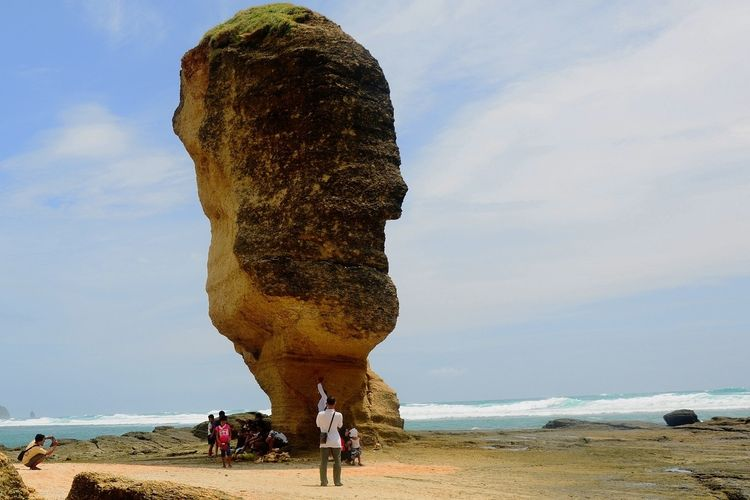

Batu PayungBatu Payung menawarkan keindahan batu berdiri tinggi yang terbentuk dari proses alami. Dipandang dari sisi manapun, batu ini akan memberi kesan indah. Dengan keindahan batu yang memesona, dan pemandangan sekitar yang indah, tempat ini sangat cocok untuk spot foto yang Instagramable. Lokasi Batu Payung berada di sebelah timur Pantai Tanjung Aan. Untuk mencapai Batu Payung ppengunjung dapat menyewa perahu dari Pantai Tanjung Aan dengan harga sewa berkisar Rp 250.000. |
 |